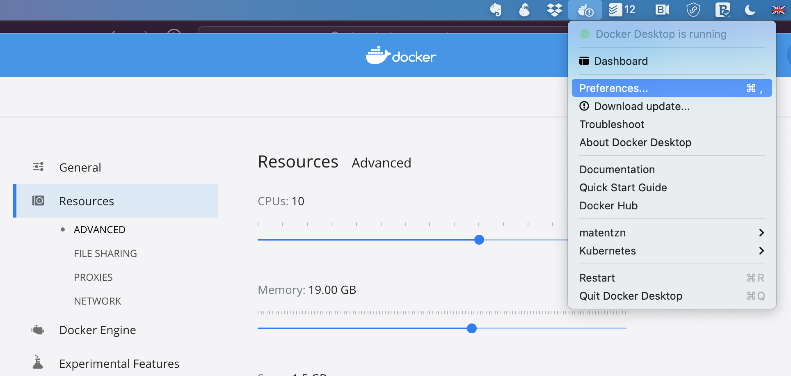

Getting set up with Docker and the Ontology Development Kit¶
Installation¶
For Windows¶
- Follow the instructions here. Note that you should have Windows 10 Professional installed for this to work. We are not sure Docker Desktop works at all with Windows 10 Home, but we have not tried in a while. If you know what you are doing, you could try to configure Docker toolbox, but we have had many issues with it, and do not recommend it unless absolutely necessary.
- Once installed, you should be able to open your command line and download the ODK.
- Click on your Windows symbol (usually in bottom left corner of screen), type "cmd" and you should be able to see and open the Command Line tool.
- in the command line type, type
docker pull obolibrary/odkfull. This will download the ODK (will take a few minutes, depending on you internet connection). - Executing something in a Docker container can be "wordy", because the docker container requires quite a few parameters to be run. To make this easier, we prepared a wrapper script here. You can download this file by clicking on
Raw, and then, when the file is open in your browser, CTRL+S to save it. Ideally, you save this file in your project directory, the directory you will be using for your exercises, as it will only allow you to edit files in that very same directory (or one of its sub-directories). - Setting the memory: Typical issues (WSL 1 vs 2)
For Mac/Linux¶
- Install docker: Install Docker following the official instructions.
- Make sure its running properly, for example by typing
docker psin your terminal or command line (CMD). If all is ok, you should be seeing something like:
CONTAINER ID IMAGE COMMAND CREATED STATUS PORTS NAMES
- Run
docker pull obolibrary/odkfullon your command line to install the ODK. This will take while. - Download an ODK wrapper script. The odk.sh has further instruction on how to best use it.
- Now you are ready to go to a directory containing the odk.sh wrapper script and running
sh odk.sh robot --versionto see whether it works.
Problems with memory¶
ne of the most frequent problems with running the ODK for the first time is failure because of lack of memory. This can look like a Java OutOfMemory exception,
but more often than not it will appear as something like an Error 137. There are two places you need to consider to set your memory:
- Your ODK wrapper script (see above), i.e. odk.bat, odk.sh or src/ontology/run.sh (or run.bat) file. You can set the memory in there by adding
robot_java_args: '-Xmx8G'to your src/ontology/cl-odk.yaml file, see for example here. - Set your docker memory. By default, it should be about 10-20% more than your
robot_java_argsvariable. You can manage your memory settings by right-clicking on the docker whale in your system bar-->Preferences-->Resources-->Advanced, see picture below.
